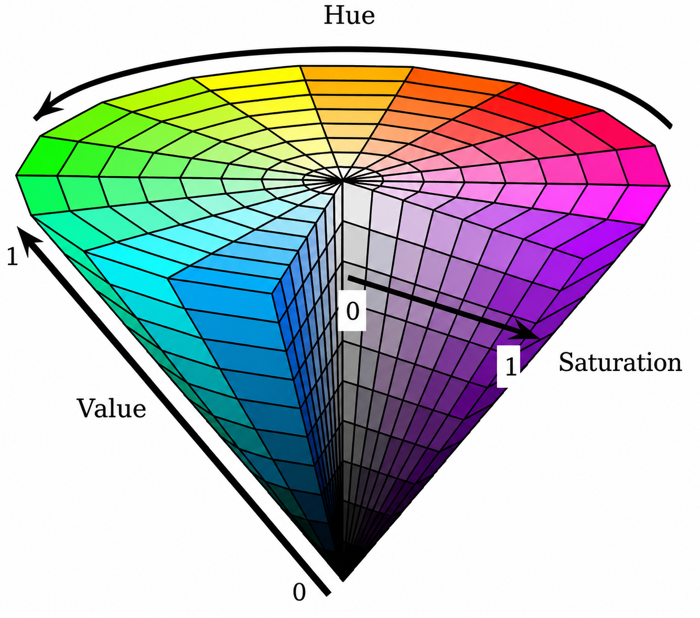

Learning Objectives
Introduction
Having established that images can be treated as NumPy arrays, we can now extend this concept from greyscale onto colour images, where each pixel stores multiple channel values, as opposed to a single intensity. This makes colour images more complex, because important visual information is often distributed across different channels and colour relationships rather than brightness alone. Learning how colour image data is structured and handled is therefore an important step in moving from simply viewing images to analysing them quantitatively, allowing us to isolate features, compare signals and make more informed use of image data in applied contexts.
The RGB colour space
Most digital colour images are represented using the RGB colour space, in which each pixel is most commonly described by a combination of red, green and blue intensity values. Thus, each pixel is a composite of three colour value intensities for each of these channels, rather than being represented by a single number, as per grayscale images. In Python, this means that an RGB image is usually represented as a three-dimensional NumPy array, with the first two dimensions corresponding to the image height and width, and the third dimension having length 3 to store the red, green, and blue components.
Some colour images contain a fourth channel: alpha. These images, termed RGBA images, have a channel which governs opacity. An alpha value of 255 means that a pixel is fully opaque, whereas a value of 0 means that it is fully transparent.
A commonly-encoutered example of an RGBA image, might be a company logo, often given as a PNG (Portable Network Graphics) file, where the logo border may non-square, and have transparent pixels around its border, allowing the logo to be layered on top of other layers, and appear to 'float' on top of it.
With a colour, RGB image, its three channel values combine to produce the final perceived colour of each pixel. For example, a pixel with a high red value and low green and blue values will appear red-dominant, while a pixel with similar values in all three channels will appear more grey or white.
This numerical pixel representation is very useful to us as data scientists, for it allows us to inspect, manipulate and analyse each colour channel separately. In biological imaging, colour information may arise from stains, fluorescent markers or false-colour rendering, for instance, and so understanding how RGB images are structured is an important first step towards more advanced colour-based image analysis.
Let's use matplotlib's imread() function, to read in a colour image, and store it into a variable.
The image is now stored as a NumPy array, and so we can use NumPy methods to inspect the data held within it, as follows.
The array comprises trios of intensities with indices 0, 1 and 2 corresponding to red, green and blue channels, respectively. We can see that its .min value is 0.0, and its .max value is 1.0, and can see that its data type is float32, and not an integer.
This shows that the intensities in this image are normalised to a scale running from 0 to 1, not 0-255, as many colour images are.
The pixel intensity scales depend partly on how the image was originally stored, and partly on which Python function was used to read it in.
Many standard colour images are saved as 8-bit data, in which each channel takes integer values from 0 to 255. When such images are loaded into Python, some libraries preserve that original uint8 format, while others convert the values into floating-point form and rescale them to lie between 0 and 1. The image content is still the same in principle, but the numerical representation has changed.
Both conventions are useful in different settings. A 0-255 scale is convenient because it reflects the common 8-bit storage format used by many image files, and it is often easier to relate to when thinking in terms of familiar RGB colour values. A 0-1 scale, by contrast, is often more convenient for computation, because it standardises the data and makes mathematical operations such as scaling, normalisation, blending, and contrast adjustment more straightforward. In practice, neither representation is inherently better in all cases, but it is important to know which one you are working with before interpreting or manipulating the image.
Let's take a look at our dendrite image, this time, in colour. As before, we'll display the image using matplotlib's imshow() function.
The image clearly contains a total of three channels, and thus is RGB, containing no transparency layer. Visibly, the dendritic processes are now a vibrant, light green colour, with punctate signal in bright red. At a glance, we can immediately anticipate that isolating one feature from the other should give a better result, when using the colour image over the greyscale counterpart we looked at, previously.
Since we have already worked with 0-1 intensities with our earlier greyscale image example, let's convert these normalised intensities to a uint8 or '8-bit unsigned integer' type, so that we can experience handling images whose intensities are represented on a 0-255, integer scale.
We can do this using a simple conditional statement:
Splitting and visualising channels
Since an RGB image's channels are stored along the third dimension of the image array, we can extract them individually with great ease, by simply using NumPy slicing. Splitting an image into its separate channels allows us to inspect how much each channel contributes to the final image, and can help reveal structures that are more prominent in one colour component than in the others.
As aforementioned, in images where different stains and markers can be used to separate structures of interest, we expect these to differ in their red, green and blue composition.
By examining channels separately, we can better understand how colour information is distributed across the image. We can also merge channels back together again by stacking them in the correct order, recreating the original RGB image from its component arrays.
Let's start out by separating the channels.
From first glance, the green channel clearly separates the dendritic processes away from the rest of the image.
Next, let's take a look at the intensity values for each channel, and plot these as histograms.
Some things to bear in mind about the plotting code given below:
- The panel shows four plots: one for red, blue, green and, finally, combined channel intensities across the image.
- As we have done previously we use the
.ravel()method for plotting a histogram, as this reduces the image down to a 1-dimensional list of intensities. Since a histogram is a plot of frequency, it requires that the data is given as a 1-D list, in order to show the distribution of intensities across the image, evenly. - The
binsize is given at 50. This essentially means the plot shows 50 'groupings' across the intensity scale. You can increase or decrease this value, to increase the 'resolution' of the groupings. - We have set x- and y-axis limits. Since the image contains predominantly black background, there is a very large intensity peak in values at the very darkest end of the spectrum between 0-5. Thus, we have decided to exclude these from our plot using
.xlim(), and have 'zoomed in' on the y-axis, using.ylim() - The aim of all these is to create a comprehensive and meaningful set of histograms that accessibly describe our image.
From these simple channel visualisations and intensity histograms alone, we can already see that the dendritic processes contribute strongly to both the red and especially the green channels, which is why much of the branching structure appears yellow-green in the composite RGB image.
The smaller puncta are most prominent in the red channel, where they appear as distinct bright spots distributed along and around the dendrites; they show a clear lack of intensity in green and blue channels; observations that can be useful in framing how we might approach separating them.
Conversely, the blue channel contributes relatively little across most of the image, apart from the cell body, where it is concentrated much more strongly than in the dendritic processes. The histograms also show a large number of low-intensity pixels in all channels, reflecting the dark background, while the high-intensity peaks near the upper end of the red and green distributions correspond to the bright neuronal structures that dominate the visible signal. And it is these regions that we are interested in.
Merging channels
Once channels have been split, they can also be merged back together again. This is done by stacking the three 2-dimensional channel arrays along a third axis in the order red, green, and blue. Recombining channels in this way reconstructs the RGB image from its individual components, and also prepares us for later image manipulations in which one or more channels may be modified before being merged again.
If the red, green, and blue channels are merged in the correct order, the recombined image should closely match the original RGB image.
While this might look like a pointless exercise, our earlier visualisation of separate colour channels, showed that the blue channel largely had very little info in it, surrounding the dendritic processes themselves (excluding the cell body) and the puncta. Thus, on occasion, it might be useful to merge just two of the three channels, to see how this might look.
In the code cell below, we will merge red and green channels only, to illustrate this.
Looking at this two-channel merged image in the context of our earlier channel splitting, it is clear that much of the visually prominent signal in this image is carried by the red and green channels, alone.
In situations where large numbers of parametrically-consistent images are being analysed, reducing the data in this way can improve computational efficiency by lowering memory use and simplifying downstream processing.
Conceptually, this is very similar to dropping less informative features from a DataFrame, as we saw in earlier Data Processing lessons, and will encounter as we approach the Machine Learning module. However, this should only be done when the discarded channel is known to contribute little meaningful information for the specific analysis.
False-colour images
On occasion, it might be useful to apply false colour to an image. This can be useful for visual emphasis, for distinguishing overlapping features more clearly, or simply for demonstrating that a colour image is built from separate numerical channels that can be manipulated independently.
False colouring refers to the deliberate reassignment or transformation of an image's colour channels so that structures are displayed in colours different from those that were present in the original image.
In Python, false colouring can be achieved in several ways, the simplest of which are inverting one or more channels so that bright regions in that channel are displayed with their opposite intensity; and swapping the order of the red, green and blue channels. Although this changes the visual appearance of the image, it does not alter the underlying spatial structure of the data.
Inversion
Take this image of Adam's cat, Milo. There is a strong yellow hue in the beanbag he is splayed out upon, but in the RGB colour space, this yellow cannot be represented as a single independent quantity. Instead, it is produced by a particular combination of red, green and blue intensities, with relatively strong red and green values and a noticeably lower blue contribution.
As an exploratory step to validate this thinking, let's quickly plot an RGB intensity histogram, so we can get a feel for the intensities of red, green and blue present in the image. We'll also plot grayscale representations of each individual red, green and blue channel in the image, as this makes it easy to identify each channel's contribution to a particular region of the image.
Matplotlib sees individual colours as the single dimension of intensities that they are - namely, a range of numbers from 0-255. It therefore applies a default colour map to these (which is viridis). To make it easy for us to see intensity of each channel, we have overriden this default by specifying cmap="gray", which allows us to visualise channel intensity per pixel ranging from low to high, as black to white.
The channel representations corroborate our previous statement:
- The blue channel intensities in the beanbag are relatively low (as denoted by the larger proportion of darker values in the histogram's blue channel, and the blue channel plot).
- The red and green channels are quite bright and intense in the yellow bean bag, as denoted by the whiter and lighter grey shades on these plots, and the peak in red and green intensities between 200-250 on the RGB histogram.
We encounter two different intensity scales when dealing with image data:
- Images stored as 8-bit (
dtype = uint8) data have intensity values scaled from 0-255 - Images normalised to a floating point scale, with intensities ranging from 0.0-1.0
To invert an image, we substitute the value of each pixel from the maximum intensity. Thus:
- For an 8-bit image, we use:
- For an image normalised to a floating point scale, we use:
Since we checked our dtype above, and found that the photograph of Milo is scaled from 0-255 (as uint8 data), we achieve inversion by subtracting each intensity value from 255, as follows:
As we would expect, the inversion or negative of the image alters the appearance of the beanbag quite dramatically. The original yellow colour is produced by relatively strong red and green intensities with a lower blue contribution. Thus, when these channel intensities are inverted, those relationships are reversed, producing a false-colour result in which the original warm yellow tones are replaced by much cooler cyan-blue hues.
Swapping channels
Another simple way to false-colour an image is to swap its channels around. This can be done using a NumPy function called dstack, which stacks separate 2-dimensional arrays together along a third axis, forming a new colour image. By changing the order in which the red, green, and blue channels are stacked, we can create a new, composite image in which the original colours are reassigned.
This does not change the spatial arrangement of the image, but it can dramatically alter its appearance and help us to understand how strongly the final colours depend on channel order.
It's achieved by simply rearranging the order of the channels, and visualising this.
3.
Let's practice false-colouring by combining channel swapping and channel inversion on the dendrite image.
- Invert the red, green, and blue channels of the
image_colourimage (which has been split intored,green, andbluein the previous cells). Since these channels are stored as 8-bit unsigned integers (uint8), their values range from 0 to 255; you can invert them by subtracting each channel's values from 255 (e.g.,255 - red). - Swap the channels: merge the inverted channels into a single RGB image in the order blue, green, and red (BGR) using
np.dstack, and store the result in a variable calledimage_swapped_inverted. - Display the resulting false-colour image using Matplotlib's
imshowfunction, making sure to hide the axes.
Colour space conversions
Despite its abundance, the RGB colour space is not always the most intuitive or useful representation of an image, for analysis. In many cases, it is helpful to convert an image into a different colour space, in which the colour information is organised according to other properties such as hue, saturation, and brightness. This can make it easier to describe colours in a way that aligns more closely with human perception, and can also simplify tasks such as identifying particular colour ranges or separating biological features from background.
A colour space is a system for representing colours numerically, by describing each pixel using a defined set of components such as red, green and blue (RGB); or hue, saturation and value (HSV).
In this part of the lesson, we will introduce the idea that a colour image can be represented in multiple mathematically equivalent ways, depending on the purpose of the analysis.
While RGB is the most abundant, the next most commonly-encountered colour space is arguably HSV (which stands for Hue, Saturation, Value). HSV is especially helpful when we want to isolate colours by their dominant tone rather than by raw red, green and blue intensities.
In a bioscience context, this is often useful for separating stained structures, identifying discoloured tissue, or isolating lesions and regions of interest in photographs or microscopy images. HSV can make colour-based thresholding and masking more interpretable and effective.
The diagram below helps to visualise the concept of HSV. You may have encountered a colour wheel when trying to change the colour of a font, or an object in Photoshop. The concept behind these colour wheels operates on the principles of the HSV colourspace.

HSV is a colour space that represents each pixel using hue, saturation, and value, rather than red, green, and blue intensities.
- Hue (H) describes the dominant perceived colour of a pixel, such as red, green, blue, or yellow.
- Saturation (S) describes how pure or intense that colour is, ranging from grey and washed-out to vivid and fully coloured.
- Value (V) describes the overall brightness of the pixel, ranging from dark to bright.
In cases where we have an RGB image, but want to operate on it using HSV principles, we first need to convert it from the RGB colour space into HSV. This is because hue, saturation, and value are not stored explicitly in a standard RGB image, but must instead be derived mathematically from the red, green, and blue channel values. Within matplotlib, there is a function called rgb_to_hsv() that performs this conversion.
Let's convert the image, and display it side by side with the original RGB image.
Immediately, you will notice how bizarre the HSV image looks when visualised directly. Once this conversion has been performed, each pixel is no longer described in terms of red, green, and blue intensities, but instead by its dominant colour (H), the strength or purity of that colour (S), and its overall brightness (V). However, imshow() still assumes that any three-channel image it receives is in RGB format, so it misinterprets the HSV values as though they were red, green, and blue intensities.
In practice, this means that HSV images are not usually displayed directly as ordinary colour images. Instead, we typically either inspect the H, S, and V channels separately, or convert the HSV image back into RGB for display. In other words, HSV is mainly a useful colour space for analysis and segmentation, rather than for direct visual presentation in the same way as RGB.
Obtaining feature target HSV values
When working in HSV, we first need some idea of what values correspond to the feature we want to isolate. One informal approach is to use a colour picker tool to sample points from an image and inspect their displayed hue, saturation, and value. This can be a useful starting point, especially when exploring an unfamiliar image, because it gives a quick sense of the colour range associated with a structure of interest.
However, it is often more useful - and more reproducible - to obtain these values programmatically in Python. Since the image is stored as a NumPy array, we can select individual pixels or small regions of interest, convert the image to HSV, and inspect the corresponding numerical values directly.
Looking at a single pixel can be helpful for an initial estimate, but in practice it is usually better to inspect a small patch of the image, since real biological structures often vary slightly in colour and intensity across space. This allows us to identify a more realistic range of hue, saturation, and value for the feature of interest, which can then be used to guide thresholding and masking.
The code cell below selects a small patch of the image containing a dendritic process and some surrounding background signal.
Firstly, let's list a few notes about the code in this cell, to help us understand what's going on:
- We firstly define a small image patch so that the dendrite can be inspected more clearly than in the full image.
- The patch is then displayed as it appears in the image, alongside separate panels for hue, saturation and value, allowing us to compare the original RGB appearance (which serves as a sort of 'map') against the three HSV components that will later be used for thresholding.
- Very dark pixels are hidden from the HSV panels using a Boolean mask based on the value channel. This is helpful because hue and saturation are often not very informative in pixels that are close to black.
- The hue, saturation and value arrays are then visualised as heatmaps, with colour bars added to show the numerical range from 0 to 1 for each channel. This is the step that helps us to pick HSV value ranges for thresholding.
- Tick marks are added to the colour bars in steps of
0.1using NumPy'sarangefunction, for more precise legibility of these heatmaps. - This gives us a more interpretable visual guide for choosing approximate HSV ranges associated with the dendritic process, while reducing distraction from dark background pixels.
The goal here is not yet to build a final mask, but to make an informed first estimate of which HSV values correspond to the feature of interest.
The code cell below makes use of the NumPy function np.where(condition, value_if_true, value_if_false), which evaluates every element of an array independently. For each pixel, if the corresponding value in dark_mask is True, the original hue, saturation or value is retained; if it is False, the pixel is replaced with np.nan (Not a Number). This produces three new arrays (hue_visible, sat_visible and val_visible) that preserve the HSV values only in the brighter regions of the image, while leaving the darker regions blank in the subsequent visualisations.
We can now quite accurately eyeball value ranges for H, S and V that correspond to the bright green dendritic process, based on this patch. This is the exploratory step that allows us to find a meaningful starting point for HSV-based thresholding and masking of features.
From the figure we generated above, it is reasonable to assume that the dendritic processes are captured in the following ranges:
- Hue range: O.20-0.35
- Saturation range: 0.75-1.00
- Value range: 0.75-1.00
Summary
In this section of Data Processing 3, we extended our treatment of images as NumPy arrays from greyscale to colour, introducing RGB images as three-channel data structures in which each pixel stores red, green and blue intensity values. We examined how colour image data may be represented on either 0-1 or 0-255 scales, visualised and interpreted individual RGB channels, compared their intensity distributions using histograms, and used channel splitting and merging to explore how different components contribute to the final image. We then introduced colour space conversion, showing how RGB data can be transformed into HSV to represent colour in terms of hue, saturation and value, and discussed why this can be useful for more interpretable colour-based analysis. Together, these ideas provide a foundation for working with colour image data quantitatively, and for using colour information to isolate, compare and manipulate biologically relevant features with greater efficacy.